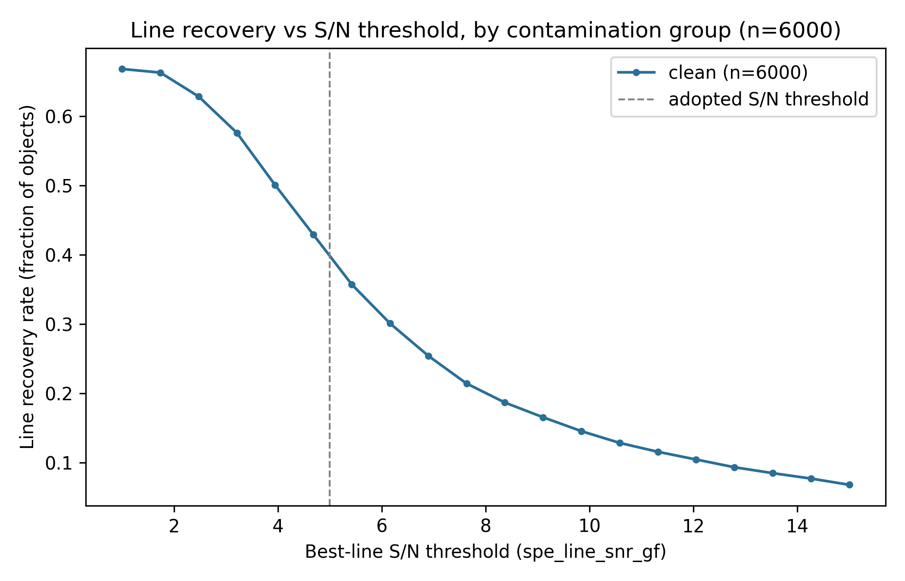
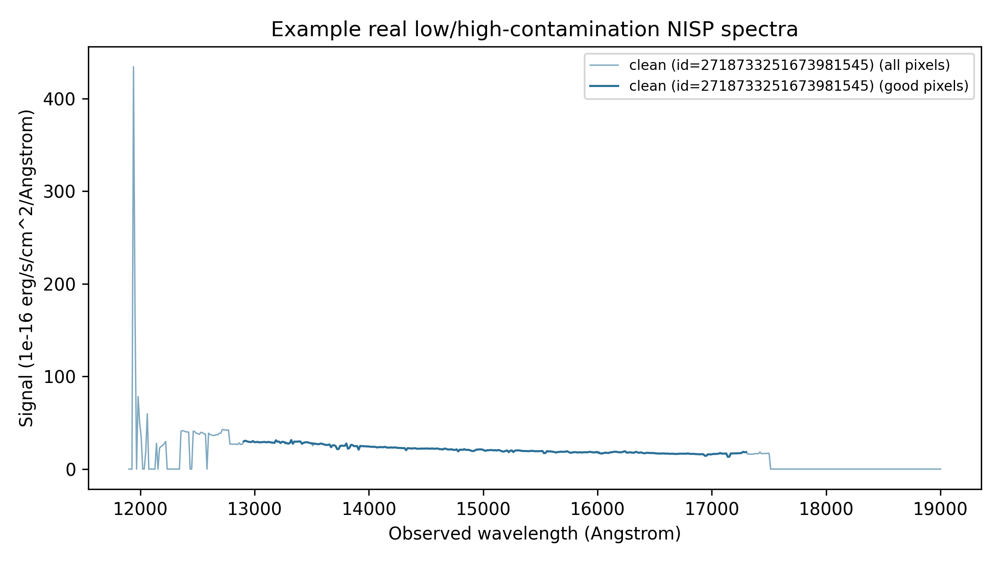

Provenance
SHA-256, LF-normalised text
b00e39ca070f4698174c25edec3c4031ca2c3672e0f49495fbcff4affa323e6eBrowse 15 versioned evidence files. Table previews simply display stored rows. Consult the project report for the source, processing steps, and inference assumptions.


b00e39ca070f4698174c25edec3c4031ca2c3672e0f49495fbcff4affa323e6e| object_id | ra | dec | tileid | spe_context_error_flag | spe_context_warning_flag | spe_error_flag |
|---|---|---|---|---|---|---|
| 2718733251673981545 | 271.8733251237168 | 67.39815453855563 | 102160061 | 0 | 32768 | 0 |
| 2718735808673947466 | 271.87358083948294 | 67.3947466170522 | 102160061 | 0 | 32768 | 0 |
| 2718870305673869618 | 271.8870305309706 | 67.3869618952405 | 102160061 | 0 | 32768 | 0 |
| 2719162396675842002 | 271.91623960636196 | 67.58420024483121 | 102160061 | 0 | 32768 | 0 |
258c25e773e51b867840d390f9d57c313688bf237c40001436f8f2ac19c63841| product_id | source | source_url | retrieved_utc | sha256 | file_size_bytes | selection_reason |
|---|---|---|---|---|---|---|
| euclid_q1_nisp_catalogue_tile102160061 | IRSA/Euclid-Q1 | https://irsa.ipac.caltech.edu | 2026-07-14T20:35:02.678788+00:00 | ac88bfd1d6c8b84a676f1213dc8fcfc68f8b002dc9762d0d033ca663a81b70c3 | 148857 | deterministic TOP 800 join of spe_quality + spe_galaxy_candidates + mer_catalogue, ORDER BY object_id, grism=RGS, tileid=102160061 |
| euclid_q1_nisp_spectrum_2718733251673981545 | IRSA/Euclid-Q1 | https://irsa.ipac.caltech.edu/api/spectrumdm/convert/euclid/q1/SIR/102160061/EUC_SIR_W-COMBSPEC_102160061_2024-11-05T17:32:03.8... | 2026-07-14T20:35:02.678788+00:00 | 1e701b00c3e8182d458fa8a642a7699c502da72e7daa761936b298750b234b85 | 102129 | deterministic sorted subset (first 40 object_id values) of tile 102160061 catalogue sample; obs_publisher_did=ivo://ipac.irsa/e... |
| euclid_q1_nisp_spectrum_2718735808673947466 | IRSA/Euclid-Q1 | https://irsa.ipac.caltech.edu/api/spectrumdm/convert/euclid/q1/SIR/102160061/EUC_SIR_W-COMBSPEC_102160061_2024-11-05T17:32:03.8... | 2026-07-14T20:35:02.678788+00:00 | c2b374d8a1a9be7eecc0765044048d06fbceff337b5bd83fb42546f821fd1c13 | 105837 | deterministic sorted subset (first 40 object_id values) of tile 102160061 catalogue sample; obs_publisher_did=ivo://ipac.irsa/e... |
| euclid_q1_nisp_spectrum_2718870305673869618 | IRSA/Euclid-Q1 | https://irsa.ipac.caltech.edu/api/spectrumdm/convert/euclid/q1/SIR/102160061/EUC_SIR_W-COMBSPEC_102160061_2024-11-05T17:32:03.8... | 2026-07-14T20:35:02.678788+00:00 | fca9abf631e12ff20486b52a4c5fec88f35555c173677dc25f272e3acc0a675e | 107804 | deterministic sorted subset (first 40 object_id values) of tile 102160061 catalogue sample; obs_publisher_did=ivo://ipac.irsa/e... |
a7517df56eb1d80414400d644ffc3dd02644a59f6c83c629cd7478fd2772e8af6c336e1ca287b65d4746a7bf6149be094b68e3d852a95328450e73d055456237| x | value | uncertainty |
|---|---|---|
| 0 | 0.10 | 0.02 |
| 1 | 0.18 | 0.03 |
| 2 | 0.14 | 0.02 |
| 3 | 0.24 | 0.04 |
2231cd2f44a7854fefcb8da60f527333a903c9c7a75fbd9154fdde13de69930586556ab499acc9ec49358e7e5eecd3df7a86a67ac643d995d4c2627d7a9df509436d59bd4962d1acc77668c4acbf9d5225bb95937e9b19c5c12890f62ca6023333a065e5d003ab356f51d3e41990de12248a2b5a04f8d68bb7cc845b7eeacb2e42595c260bb7154bbea2deb285b113ffddbc8bc300dfb4e4e6aaa47050293471320e91652c6853f1ec99128a3aebb1c361147dc9e4904f3ca2a5039c3027d38ba657b1f65a11716f209f3712c95b58998fe43bc126a35aadac236d6099bb247d89a753e8669b71cf0a30cb6771c320afd61c158430ca8748e4f4adee0f30eb43dcd885bf927f45303157d1f3c4bf84b67f4f92303892c6670f2429f49ec1de8e56e703d8db87da2a2ada17899f876d24f51a5df7f45c9a1e65f0587f38c7895f4dac498e76cfe3839d18d82452c0e1ab8ddd6b9b21a697c5a4a88789cf700504SHA-256 values verify the stored files. They do not independently validate the scientific analysis. Rebuild this page with python scripts/evidence_catalog.py followed by python scripts/render_evidence_page.py.